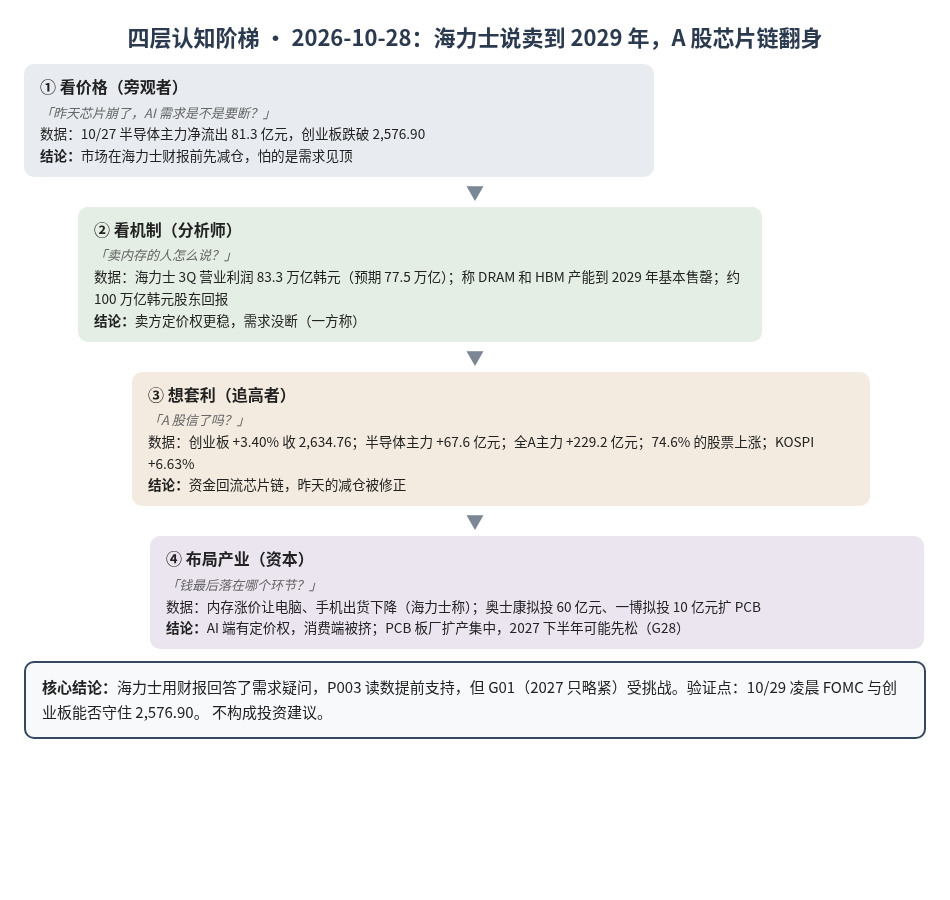
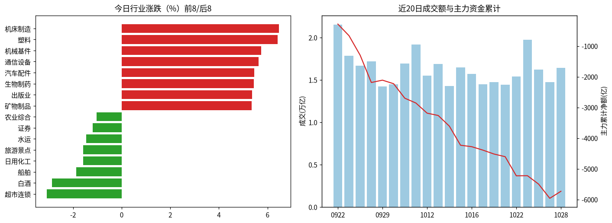
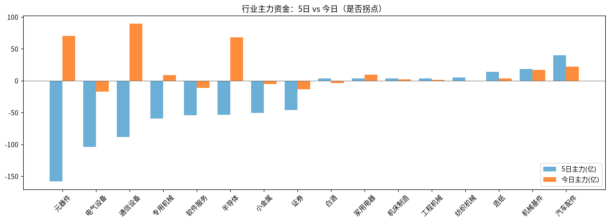

A股投研日报 · 2026-10-28（四层认知版）
- 主线
- 海力士财报给了答案——AI 要的内存卖到 2029 年，A 股芯片链从卖转买
- 最重要变化点
- 创业板 +3.40% 收 2,634.76，收回 2,576.90；半导体主力从 -81.3 亿元转为 +67.6 亿元；74.6% 的股票上涨
- 机制含义
- 昨天担心的"需求会不会断"被海力士回答了：营业利润 83.3 万亿韩元超预期，称 DRAM 和 HBM 产能到 2029 年基本售罄；卖方定价权更稳
- 下一个观察点
- 10/29 凌晨 FOMC（CME 加息概率 9.4%）：若加息或沃什明示 12 月加息，且创业板 10/29 跌回 2,576.90 以下，则今天的反弹失败
本报告为基于公开数据的研究分析，不构成投资建议。
今日市场概况
数据管道速览（Tushare 收盘数据，规则生成，正文判断见下文）
- 指数：上证指数 +0.91% 收 3,681.47，创业板指 +3.40% 收 2,634.76；深证成指 +2.02%、科创50 +2.45%、上证50 +0.23%、沪深300 +0.85%、中证500 +1.99%、中证1000 +2.35%（Tushare）。
- 量能与宽度：成交 16,421 亿元（20 日均 16,074 亿元）；上涨 4,156 家 / 下跌 1,239 家，上涨占比 74.6%，个股中位数 +1.3%。
- 主力资金：全 A 主力 +229.2 亿元，连续第 1 日净流入。
- 行业：主力流入居前 通信设备（+89.5 亿）、元器件（+70.0 亿）、半导体（+67.6 亿）；流出居前 电气设备（-17.7 亿）、证券（-13.8 亿）、软件服务（-11.4 亿）。
- 龙虎榜 / 北向：机构专用席位合计 -1.80 亿元；沪深股通成交前五 宁德时代、中际旭创、新易盛、贵州茅台、招商银行（成交额≠净买入）。
变化点
方法：四层认知阶梯 + 历史周期律。数据 Tushare（见附录）。不构成投资建议。
一、世界观定位
阶段不变，回退条件不变。五盏灯仍是 4 黄 1 红（估值红）。新变化：短端融资压力（SOFR 减 IORB，银行间借钱比央行存款利率多付的部分）升到 5bp，越过警戒线，距危险线 10bp 还有 5bp。
二、变化一：海力士说"卖到 2029 年"，A 股芯片链翻身
昨天 A 股在财报前先减仓，今天答案出来了，方向相反。
- 数字：海力士三季度营业利润 83.3 万亿韩元，高于分析师平均的 77.5 万亿；营收 104.6 万亿韩元（源）。
- 话语：公司称到 2029 年的三年里，DRAM 和 HBM 产能基本售罄（源），并预计内存短缺持续到 2030 年（源）。同时宣布约 100 万亿韩元股东回报，CFO 称股价被低估（源）。
- 市场：韩国 KOSPI 收涨 6.63%，海力士涨近 11%（源）。A 股通信设备、元器件、半导体主力合计净流入 227 亿元；全 A 主力 +229.2 亿元，是近 10 个交易日里最大的单日净流入。
判断：卖方敢说"卖到 2029 年"，又把现金拿来回购而不是只扩产，说明它认为价格还能守住。这读数支持 P003（原定 4Q 财报会检验，这次提前说了）。但"短缺到 2030 年"和我们 G01"2027 年只略紧"相冲，G01 受挑战，需看海力士 2027 位元产能指引再定。漏洞：卖方说售罄是一方称，也有锁价稳股价的动机。 另一面：海力士预计内存涨价会让电脑、手机出货下降（源），即 G26 的"两种行情"在内存上也成立。
三、变化二：PCB 板厂扩产在加速
- 奥士康拟在南通投 60 亿元建智算与高速互联 PCB 基地（源）；一博科技子公司拟投 10 亿元，设计产能 8 万平方米/月（源）。
- 长鑫传将在两个月内小批量生产 HBM3E（路透社，知情人士称，未证实）。
判断：板厂扩产越集中，越符合 G28"2027 下半年先松的是板厂"。读数支持 G28，但两项都只是投资协议，落地看设备订单。
四、上一交易日验证点回顾（10/27 → 10/28）
| 验证点 | 结果 |
|---|---|
| 海力士利润低于 76.96 万亿或不说售罄 | 未命中：83.3 万亿，称售罄到 2029 |
| FOMC 加息 | 待验证（10/29 凌晨） |
| 半导体净流出收窄到 30 亿内 | 命中企稳：转为 +67.6 亿 |
| 创业板收回 2,576.90 | 命中止跌：收 2,634.76 |
五、供应链风险敞口（人工复核版）
脚本版见 risk_section_20261028.md。口径为 GB300/NVL72 当量柜年化系统价值；Δ$ 为事件类型假设模板，仅用于排序，非预测。脚本 4 条，误匹配 4 条（均为财报与订单表态，非断供）。复核后有效断供 Δ$≈0，基线维持年化 EL 57.7 亿美元（10/21）。采集降级：GDELT 限流，巨潮公告匹配未恢复。
六、机会表（产业/环节层面，不构成投资建议）
| 环节 | 逻辑 | 证伪条件 |
|---|---|---|
| HBM/服务器内存 | 卖方称售罄到 2029，定价权在卖方 | 海力士或三星下调 2027 价格指引 |
| 先进封装 | 内存不缺订单，封装仍紧 | 台积电否认涨价 |
中长期展望（3–12 个月与 2027）
3–12 个月：内存卖方定价权比我们预想的更硬，支持 G12、G25；但 G01 受挑战。卡脖子仍沿 HBM、封装、载板往下走（G19）。估值灯仍红，节奏看利率。
2027：总闸门仍是四大云厂商 2027 资本开支指引（P023，概率 0.55）。
什么会改变展望：①FOMC 加息且 10 年期美债站稳 5% 以上；②三星或美光说 2027 HBM 有富余；③四大 2027 指引低于 2026。
七、明日/本周验证点（可证伪）
- 10/29 凌晨 FOMC 加息或明示 12 月加息，且创业板跌回 2,576.90 下，则反弹失败。
- 10/29 半导体主力仍净流入为延续；净流出超 50 亿元则今天只是一日反弹。
- 三星财报会若称 2027 HBM 有富余，G01 回到支持；若也称售罄，G01 需提请 John 复核。
- 11/1 韩国 10 月半导体出口同比 > +150%，P001 命中。

一句话总结：海力士说卖到 2029 年，A 股芯片链翻身；接下来看美联储。
本报告为基于公开数据的研究分析，不构成任何投资建议。
附录：市场数据（证据底稿）


| 收盘 | 今日% | 5日% | 20日% | MA20 | 成交(亿) | |
|---|---|---|---|---|---|---|
| 上证指数 | 3,681.47 | 0.91 | -0.85 | -6.85 | 3,764.55 | 7,510.19 |
| 深证成指 | 11,473.18 | 2.02 | -1.98 | -16.40 | 12,197.00 | 4,353.78 |
| 创业板指 | 2,634.76 | 3.40 | -2.22 | -22.51 | 2,888.65 | 1,832.25 |
| 科创50 | 1,282.93 | 2.45 | -4.49 | -22.95 | 1,416.05 | 756.76 |
| 上证50 | 2,753.01 | 0.23 | 0.22 | -5.04 | 2,787.76 | 1,309.00 |
| 沪深300 | 4,083.87 | 0.85 | -0.68 | -10.14 | 4,228.13 | 4,192.79 |
| 中证500 | 6,640.89 | 1.99 | -2.92 | -15.18 | 7,035.50 | 2,842.88 |
| 中证1000 | 6,578.10 | 2.35 | -2.98 | -15.22 | 6,951.67 | 3,374.64 |
行业资金热力（按5日主力净额排序，前8/后8）
| industry | 今日% | 5日% | 20日% | 今日主力(亿) | 5日主力(亿) | 资金连续天数 |
|---|---|---|---|---|---|---|
| 汽车配件 | 5.5 | 8.6 | 10.5 | 22.0 | 39.7 | 4.0 |
| 机械基件 | 5.7 | 5.8 | -5.9 | 16.6 | 18.1 | 1.0 |
| 造纸 | 1.6 | -4.5 | -9.3 | 3.3 | 13.5 | 21.0 |
| 纺织机械 | 4.0 | 18.3 | 218.8 | -1.1 | 5.2 | -1.0 |
| 工程机械 | 2.2 | 2.4 | -3.8 | 1.1 | 3.6 | 1.0 |
| 机床制造 | 6.5 | 8.9 | -4.5 | 2.2 | 3.5 | 1.0 |
| 家用电器 | 3.2 | 2.6 | 7.9 | 9.1 | 3.3 | 1.0 |
| 白酒 | -2.9 | 0.7 | 3.6 | -3.7 | 3.2 | -1.0 |
| 元器件 | 4.1 | -5.2 | -21.2 | 70.0 | -158.1 | 1.0 |
| 电气设备 | 1.7 | 0.1 | -12.5 | -17.7 | -104.1 | -3.0 |
| 通信设备 | 5.6 | -7.2 | -29.3 | 89.5 | -88.5 | 1.0 |
| 专用机械 | 4.5 | 0.3 | -2.5 | 8.8 | -59.7 | 1.0 |
| 软件服务 | 0.5 | -0.8 | 3.4 | -11.4 | -54.3 | -3.0 |
| 半导体 | 5.1 | -1.3 | 6.0 | 67.6 | -53.4 | 1.0 |
| 小金属 | 1.5 | -4.1 | 27.2 | -5.3 | -50.8 | -13.0 |
| 证券 | -1.2 | -1.7 | -7.2 | -13.8 | -46.6 | -3.0 |
市场情绪时间序列（近10日）
| trade_date | 成交(亿) | 上涨占比% | 主力净额(亿) | 个股中位涨跌% |
|---|---|---|---|---|
| 20261015 | 16457.2 | 7.7 | -620.8 | -3.0 |
| 20261016 | 15690.7 | 59.3 | -47.2 | 0.5 |
| 20261019 | 14487.9 | 40.9 | -111.4 | -0.4 |
| 20261020 | 14715.3 | 67.9 | -127.9 | 1.0 |
| 20261021 | 14420.6 | 35.6 | -86.3 | -0.4 |
| 20261022 | 15418.6 | 9.6 | -623.7 | -2.5 |
| 20261023 | 19728.5 | 81.2 | 4.3 | 1.6 |
| 20261026 | 16230.9 | 40.4 | -274.6 | -0.5 |
| 20261027 | 14729.0 | 10.9 | -462.7 | -3.0 |
| 20261028 | 16421.0 | 74.6 | 229.2 | 1.3 |
今日上涨4156家/下跌1239家，涨幅≥9.8% 152家、跌幅≤-9.8% 17家¹。
龙虎榜侧写：机构专用席位合计 -1.80 亿；净买入居前 宏明电子(+1.56亿)、伟创电气(+0.95亿)、博杰股份(+0.61亿)，净卖出居前 福莱新材(-1.08亿)、洛轴股份(-0.92亿)、桂发祥(-0.74亿)。 沪深股通活跃股：成交前五为宁德时代、中际旭创、新易盛、贵州茅台、招商银行（成交额≠净买入）。
注：¹涨跌停为按±9.8%阈值近似（limit_list_d无权限）。²行业为Tushare stock_basic分类自行聚合（sw_daily/ths_daily/行业资金流接口无权限），成交加权、剔除N/C新股，成分≥8只。³主力=大单+特大单净额（moneyflow）。⁴2024年8月起北向每日净买入停止披露，moneyflow_hsgt/hsgt_top10数值为成交口径，不可解读为净流入。⁵新闻/公告接口无权限，改用新浪财经7x24公开快讯自动抓取+人工补充。
接口状态：trade_cal:OK；stock_basic:OK；index_daily:OK；moneyflow_hsgt:OK；hsgt_top10:OK；top_list:OK；top_inst:OK；index_dailybasic:OK；新浪7x24(公开):OK 3986条（10-27 15:12 起）